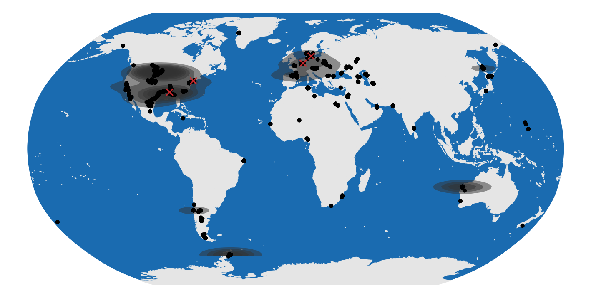
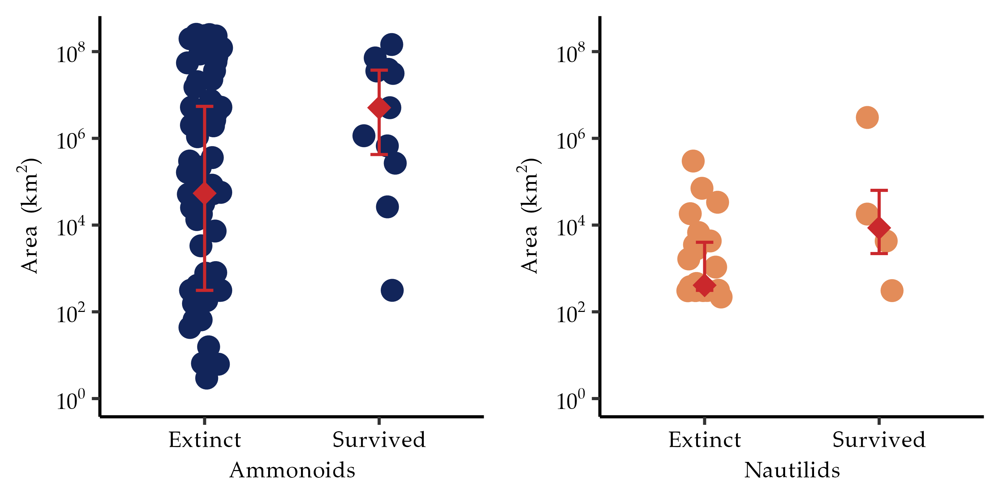
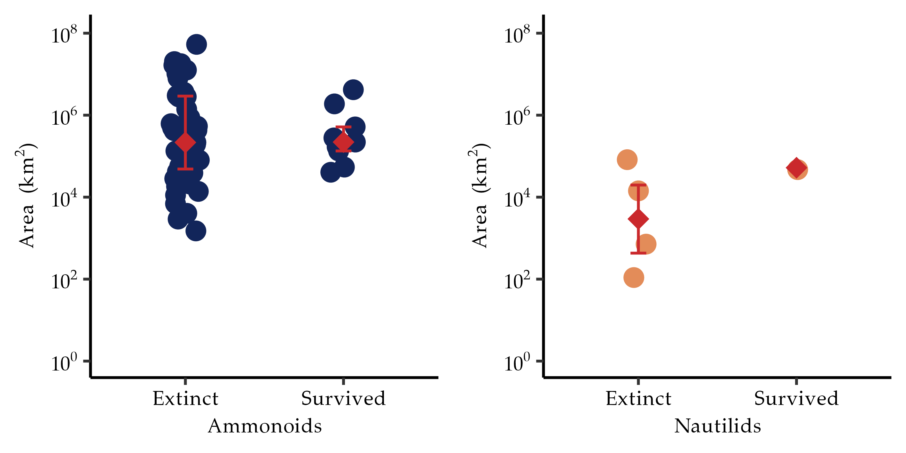

Occurrence data derive largely from Flannery-Sutherland et al. (2024), supplemented with further Maastrichtian ammonoid and nautiloid occurrences from the PaleoDB (https://paleobiodb.org/). After various filtering steps, there are 3668 occurrences in the dataset. 217 occurrences are nautilids. Occurrence data is available for 34 ammonoid genera and 9 nautilid genera that were extant at the very end of the Maastrichtian.
Other data is collated from the literature. Body size data derive from Payne & Heim (2020). Hatching sizes for Maastrichtian ammonoids are taken from (De Baets et al., 2015; Laptikhovsky et al., 2012; Shigeta & Maeda, 2024; Takai et al., 2022). Hatching sizes for 24 Cretaceous nautilid species are taken from (Laptikhovsky et al., 2012), the remaining five from (Cichowolski, 2003; Landman et al., 2018; Malchyk et al., 2017; Tajika et al., 2022)